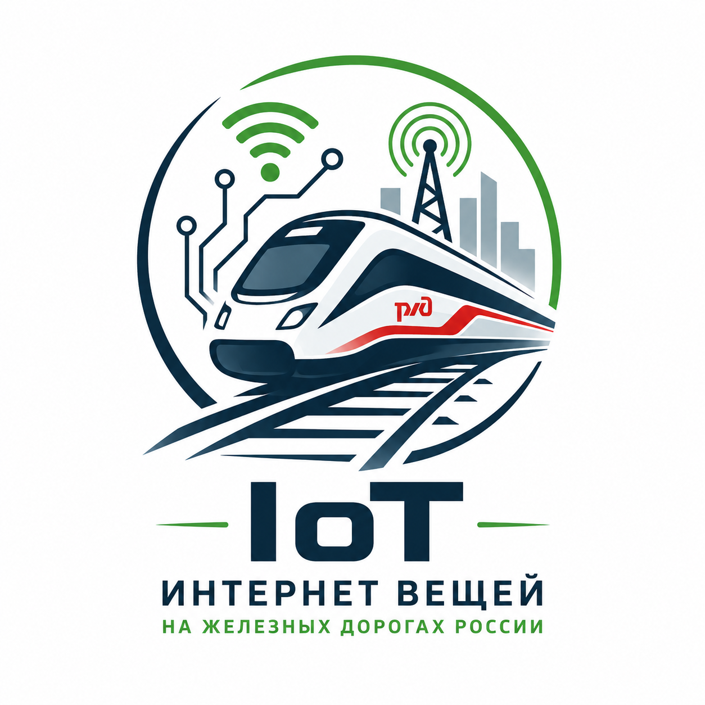

Интернет вещей (IoT) представляет собой сеть датчиков и устройств, которые собирают и передают данные в режиме реального времени.
В железнодорожной отрасли IoT используется для контроля путей, локомотивов, вагонов и объектов инфраструктуры.
Технологии позволяют повысить безопасность перевозок и сократить расходы на обслуживание оборудования.
Системы диагностики позволяют заранее выявлять неисправности оборудования.
ПодробнееОбзор современных технологий цифровизации железнодорожного транспорта России.